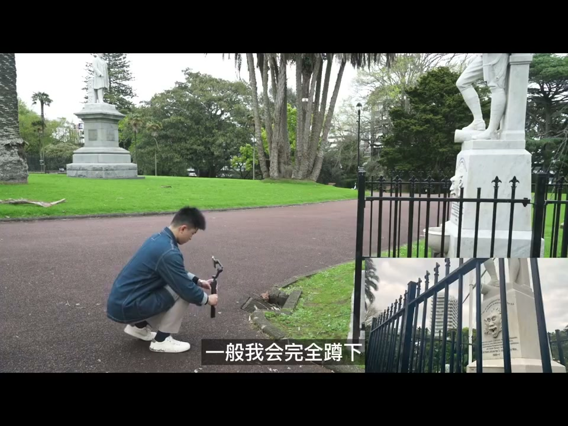

内容要点
[00:00] 今天我會用手機和雲台教大家幾種電影中常見的運鏡方式
[00:07] 第一個是前推加上搖鏡頭
[00:09] 在我們拿著穩定器向前走的過程中
[00:12] 同時用手指往上推動搖桿
[00:15] 因為一個鏡頭中包含了前鏡推動
[00:17] 和向上搖的兩個鏡頭運動
[00:20] 畫面整體會變得十分動感
[00:22] 那麼這邊我使用的手機穩定器是大疆Osmo Mobile 6
[00:26] 第二個是橫移鏡頭
[00:28] 利用穩定器自帶的延長感
[00:30] 翻轉雲台進行拍攝
[00:32] 這裡一定要注意配合上前景才能產生有層次的畫面
[00:37] 橫移鏡頭在電影中經常會出現
[00:40] 跟隨人物進行左右之間的移動
[00:44] 第三個是環繞鏡頭
[00:46] 圍繞主體進行拍攝
[00:48] 大家可以看到我的腳步其實是半蹲前進的狀態
[00:52] 這樣半蹲的前進能夠給到我們更穩定的畫面
[00:56] 在我們拍攝的過程中
[00:57] 雲台始終圍繞著主體進行拍攝
[01:01] 我們來看看電影中是如何運用這些鏡頭的
[01:10] 第四個是前推鏡頭
[01:11] 前推鏡頭非常簡單
[01:13] 但是用法卻非常多
[01:15] 它可以是快速的向前推進
[01:18] 也可以是緩慢的向前推進
[01:20] 電影中經常會出現人物傷感或者思考的時刻
[01:25] 一般導演都會用緩慢前推
[01:27] 去進行人物情緒的增強
[01:30] 第五個是上升鏡頭
[01:32] 這裡有一個使用穩定器的技巧
[01:34] 一般我會完全蹲下
[01:36] 然後運用腳和身體同時往上提升
[01:40] 這樣的畫面出來更加的平穩
[01:43] 緩慢的鏡頭上升一般在電影中用作畫面遮擋
[01:47] 揭露隱藏畫面
[01:49] 像我這裡揭露了一隻鴿子在雕塑頭上搞事情
[01:53] 同時這個運鏡也可以用作人物行動的跟隨
[01:58] 最後一個是橫移焦點轉換鏡頭
[02:01] 這個鏡頭的意思是通過橫移的鏡頭運動
[02:04] 在兩個視覺焦點之間進行切換
[02:08] 第一個我們的焦點在這個陶瓷人臉上
[02:11] 然後通過橫移把焦點切換到後面的雕塑上


